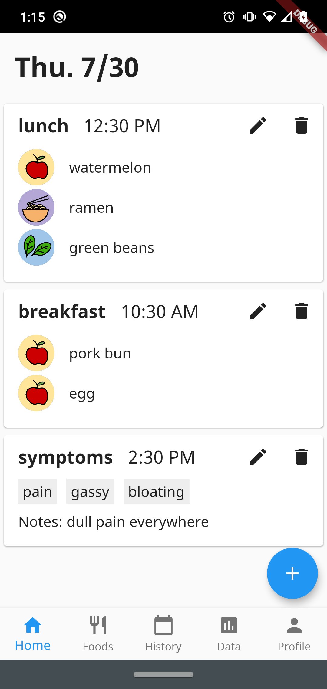
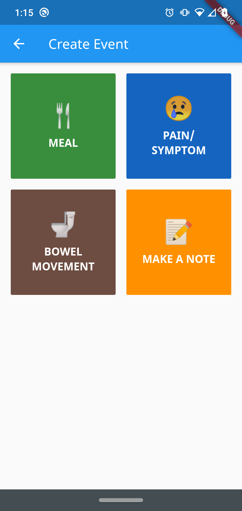
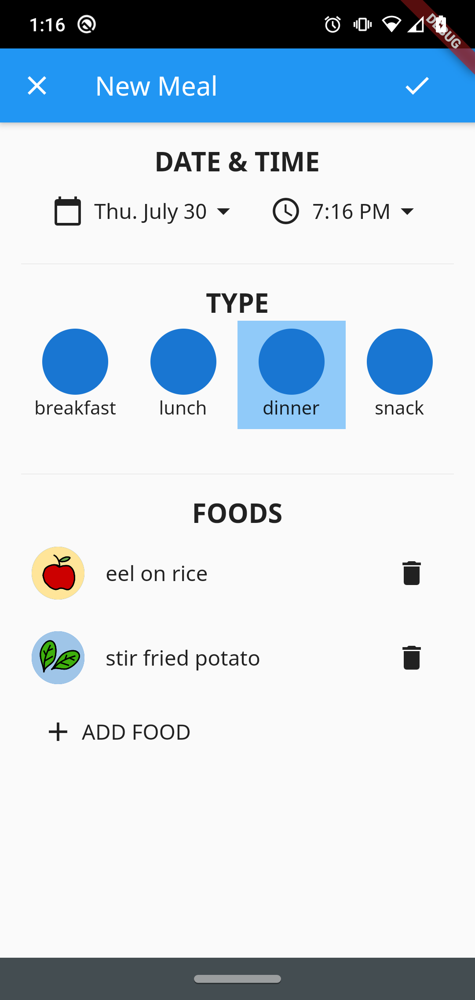
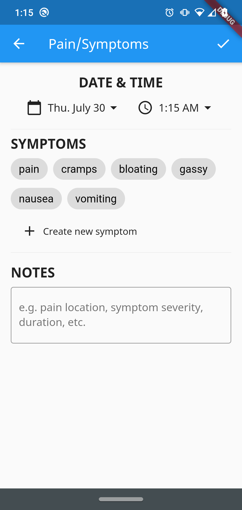
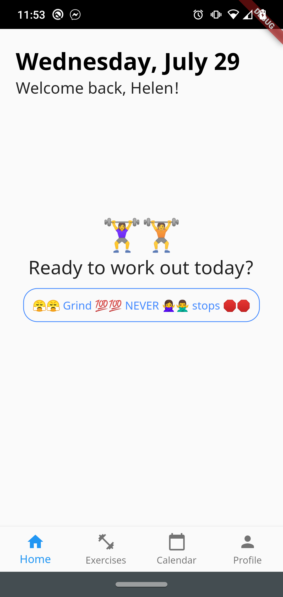
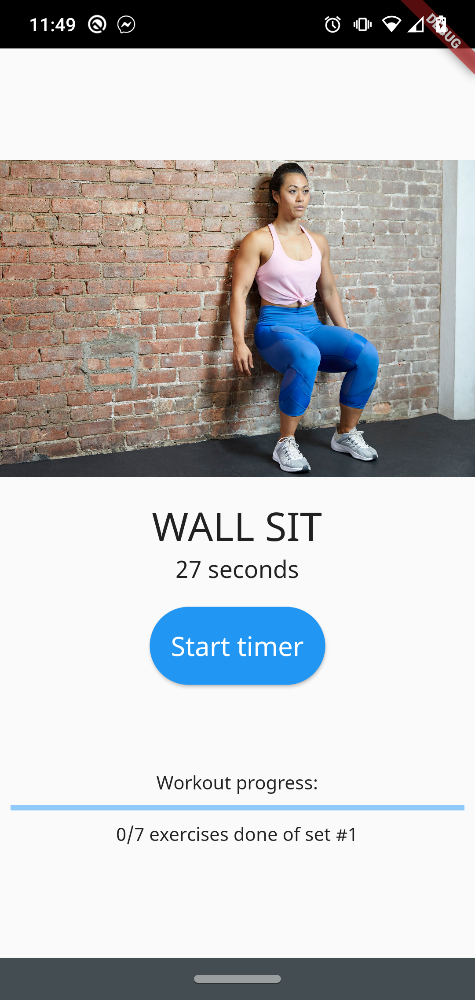
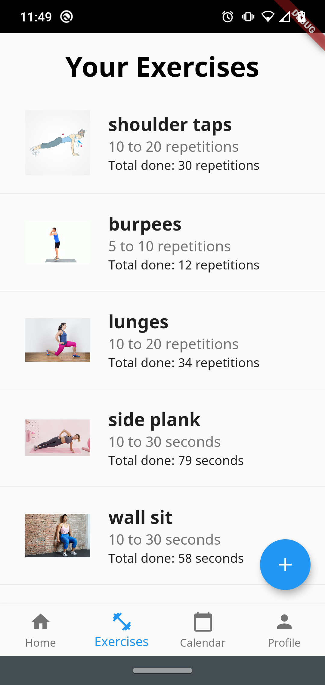
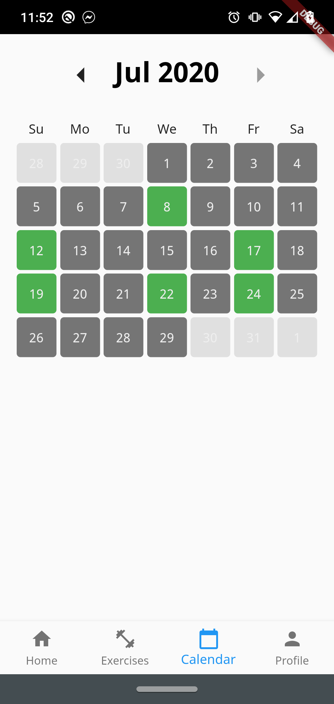

CS student at Cornell (College of Engineering, '23)
Flutter dev on the Carriage team in Cornell Design & Tech Initiative
Hoping to learn how to create impactful and accessible tech!
App dev: cross-platform development with Flutter
Web dev: currently learning HTML/CSS, this website is my first project 😄
Accessibility + assistive tech: new to the field but eager to learn!
A Flutter app for tracking food and symptoms to help identify possible food intolerances.




Current features:
Firebase backend support
Cards with current day's meals and symptoms
Create new meals and symptoms to track
List of your foods
Working on:
Adding pages for tracking bowel movements and making notes
Displaying cards in sequential order
Drawing more icons for foods and meals
Multi-user support with Google log in
A Flutter app that generates workouts based on a list of exercises.




Current features:
Firebase backend support
List of exercises with ranges for repetitions or times
Randomly generated workouts with user-selected number of exercises
Calendar with days exercised
Working on:
Figuring out how to best select and store images (currently using image URL)
Adding exercise goals
Multi-user support with Google log in
Coming up with a catchy name :)
TBA: Rummikub, Tetris, and BadRPG
GitHub: helenxuyang
LinkedIn: helenxuyang
Email: helen.xu.yang@gmail.com / hxy2@cornell.edu